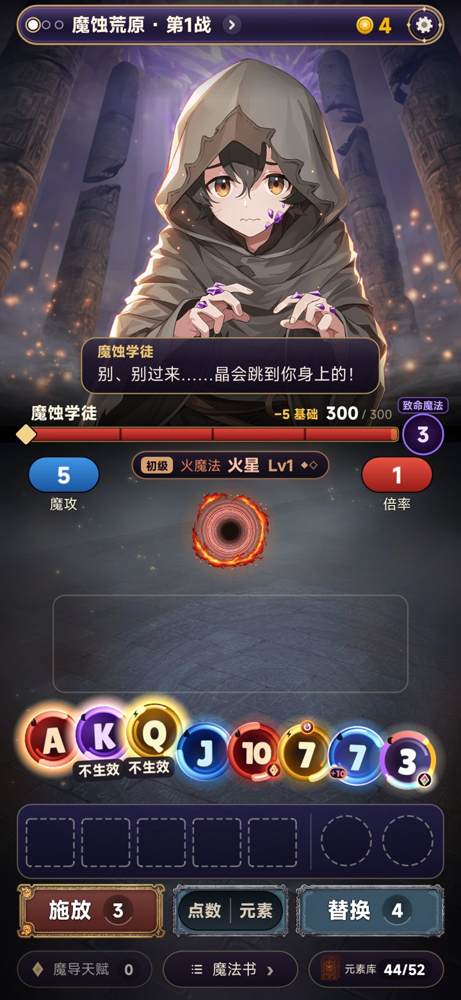
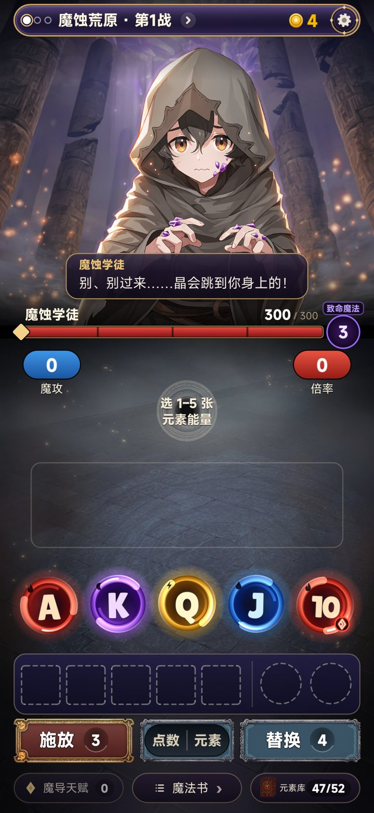
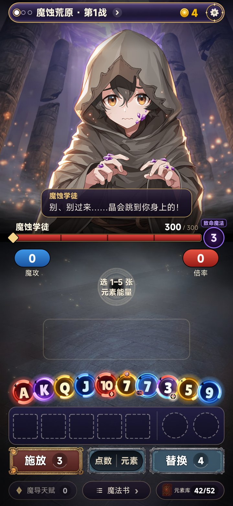
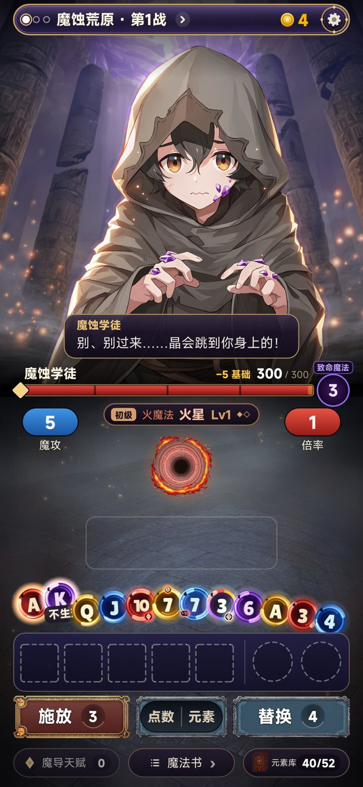
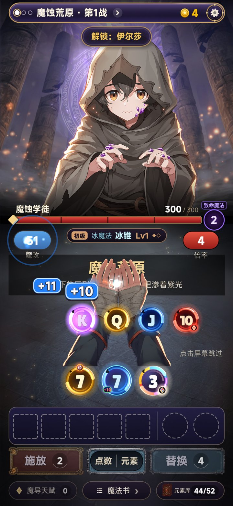
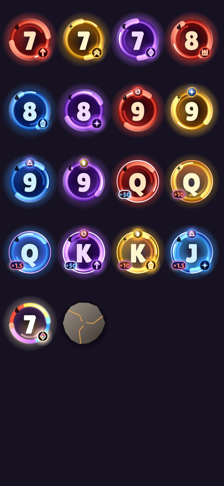
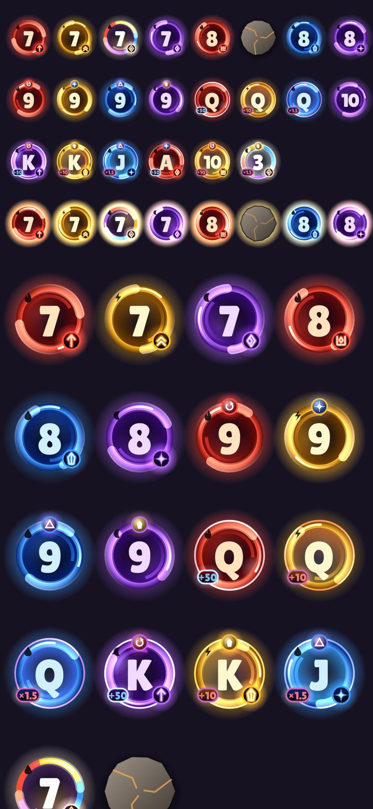
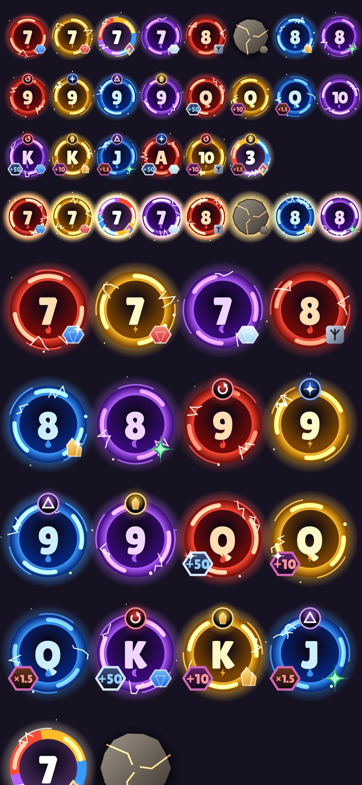
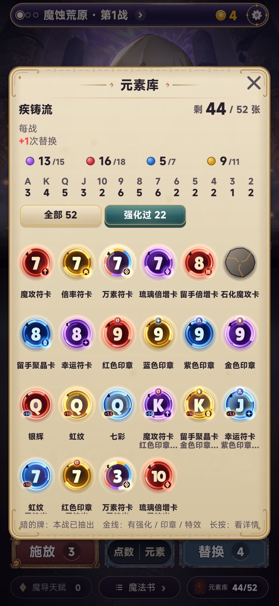
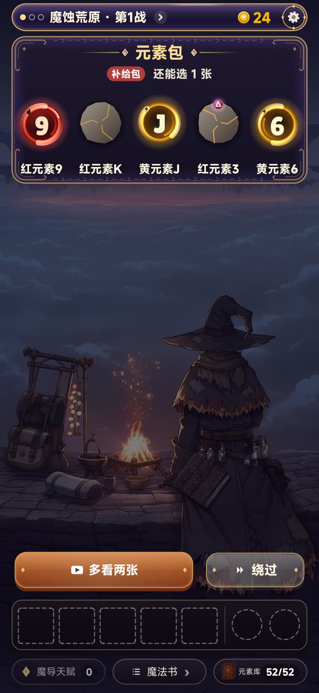

手搓魔法 · 元素能量 第二版 实机截图（编号居中 / 能量球缩小 15% / 流动能量 / 标志嵌入能量环）
8 张手牌（编号居中），选中 3 张：流动能量更快更亮
5 张手牌
10 张手牌（编号仍居中）
12 张手牌
施放计分：能量涌出 + 柔和波纹
标志放大 2 倍：强化符文嵌在环右下、印章嵌在环顶、特效值嵌在环左下
全部标志（手牌大小 + 2 倍）
对比：上一版（角标贴纸）
元素库「强化过」
元素包